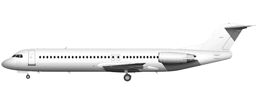

Fokker

F50
F70
F70ER
F100
Game Stats
Other Information
The Fokker aircraft family is a series of propeller and jet regional aircraft.
In-Game
The Fokker 100 is the most popular with 100 units in circulation, closely followed by the Fokker 50 at 90 units. The 70ER is the next popular at 20 units, then the 70 at a measly 2 units.
Specs
Trivia
- Bombardier was a potential purchaser of the Fokker program but never reached an agreement.
- There is a Fokker 60, a larger version of the F50. There are only four of them that currently exist, due to Fokker's bankruptcy. These were operated by the Royal Netherlands Air Force, but is currently in storage.
External Links
- Fokker 50 / 70 / 100 on Wikipedia
- Fokker 50 / 70 / 100 livery templates
Gallery
Original content from
Airline Club Wiki
. Licensed under CC-BY-SA.